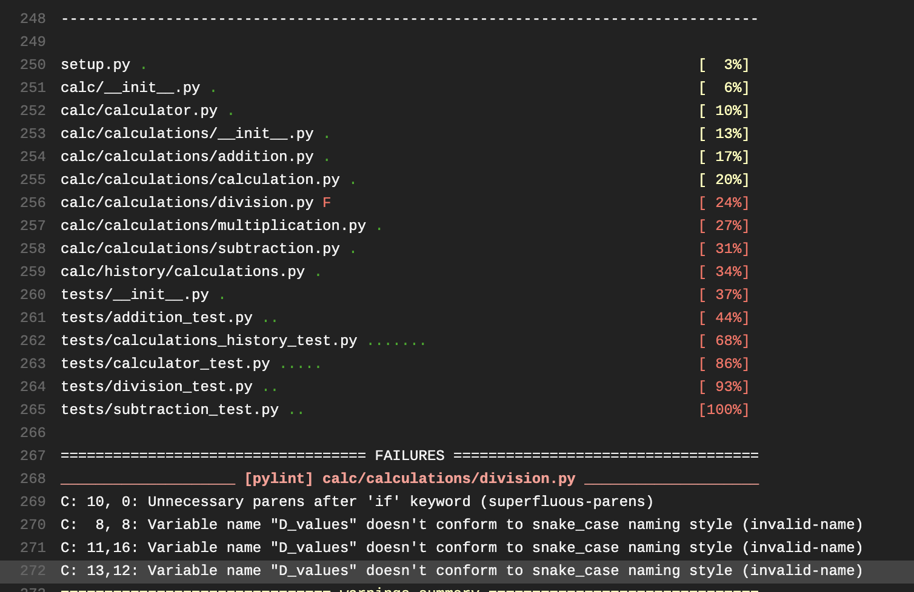

Travis CI:
Travis CI is an online, decentralized continuous integration service in the software development space for building and testing GitHub-hosted code. The software code is also open source and can be downloaded from GitHub, although developers do not currently recommend using it alone in closed source projects
It provides support for multiple programming languages, including Ruby, JavaScript, Java, Scala, PHP, Haskell, and Erlang. Many well-known open source projects use it to build tests on every commit, such as Ruby on Rails, Ruby and Node.js.
In 2012, Travis CI decided to fundraise to support further development, and many heavyweight technology companies contributed to the fundraising campaign.
